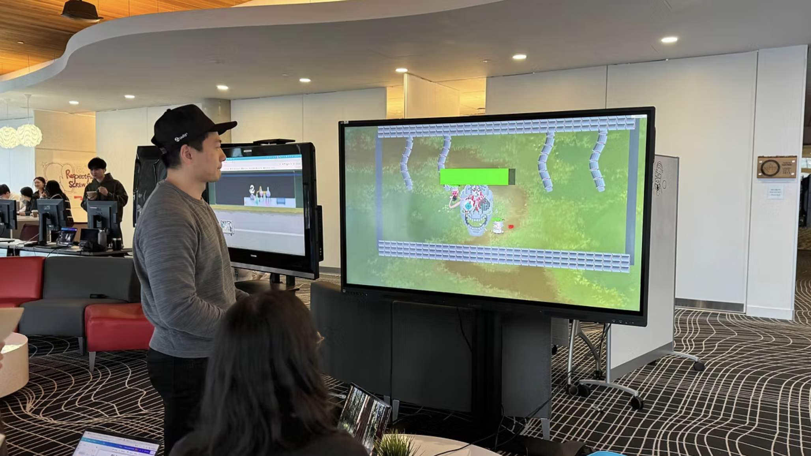

Biochem 101
A two player cooperative action game built around chemistry and teamwork, developed by Team Fennec over four months.
Project Introduction
Biochem 101 is a two player cooperative action game developed by Team Fennec over four months. Players take on the roles of a reckless Mad Scientist and a disciplined Government Agent as they fight through a laboratory where every experiment has turned hostile.
The game combines action combat with chemistry based reactions, improvised weapons, and cooperative lab minigames. As the team's sole Project Manager, I managed planning, scope, team coordination, playtest driven iteration, and delivery across a multidisciplinary student team.

Mad Scientist and Government Agent in the laboratory
Role & Responsibilities
As the team's sole Project Manager, I kept production moving across a six person team of artists, developers, and designers. My focus was to translate creative ideas into achievable work, maintain visibility across disciplines, and keep scope connected to what the team could realistically deliver within four months.
Production and Scope Management
Built and maintained the production plan, roadmap, milestones, and ClickUp backlog. Broke the game into features, tasks, dependencies, and achievable sprint goals. Adjusted scope throughout production to reflect team capacity, course workload, and the remaining timeline. Helped the team prioritize the core cooperative experience over lower impact additions.
Team and Cross Discipline Coordination
Facilitated planning sessions, stand-ups, progress reviews, and team discussions. Coordinated work across art, development, design, and integration. Tracked ownership, blockers, dependencies, and next actions. Helped resolve differences in priorities by keeping decisions connected to shared project goals.
Testing and Iteration
Planned playtests and helped identify what the team needed to observe and validate. Organized findings into clear themes instead of treating every comment as a new task. Translated useful feedback into updated priorities and production tasks. Balanced iteration needs against time, effort, and production risk.

Team Fennec
Production Journey
Define the Cooperative Experience
Project kickoff
Helped the team define the core cooperative loop, clarify the project direction, and turn the early concept into a manageable production plan.
Break the Game into Achievable Work
Production setup
Built the ClickUp structure, organized priorities, identified dependencies, and translated major features into achievable tasks alongside other academic responsibilities.
Manage Production Across Disciplines
Active development
Maintained visibility across disciplines, tracked blockers, clarified ownership, and kept team communication connected to the production plan as art, design, and development tasks became increasingly dependent on one another.
Test and Adjust the Experience
Playtesting and iteration
Organized feedback into production priorities and helped the team decide which changes would create the most value within the available time, connecting playtest results directly to updated sprint goals.
Refine and Complete the Game
Final delivery
Protected the final scope, coordinated remaining dependencies, and maintained visibility over the work needed for completion. The goal was to strengthen the core cooperative experience rather than add every remaining idea.


Playtesting sessions
Problem → Response → Outcome
Biochem 101 required a small multidisciplinary team to build a complete cooperative game within four months while balancing other academic responsibilities. As the sole Project Manager, my focus was to keep the scope realistic, maintain alignment across disciplines, and guide iteration without losing sight of delivery.
Managing Scope and Workload
The original concept included multiple characters, combat systems, chemistry reactions, cooperative minigames, enemies, environments, UI, and art assets. The team also had other courses and responsibilities, so production capacity changed throughout the four month timeline.
I regularly reviewed the backlog, remaining timeline, dependencies, and each discipline's workload. Features were prioritized based on their value to the core cooperative experience, while lower priority additions were simplified, delayed, or removed. I also adjusted sprint goals when the team's available capacity changed.
The team maintained a playable and achievable scope throughout production. By focusing effort on the systems that supported cooperation and game clarity, we completed a cohesive final experience without depending on every original idea.
Aligning Art, Design, and Development
Artists, designers, and developers often approached the same feature from different perspectives. A visually strong idea was not always technically practical, while a functional system did not always provide the intended player experience.
I created clearer ownership, task definitions, references, and acceptance expectations before work began. During team discussions, I helped connect creative decisions to technical requirements, available time, and the intended player experience. Dependencies and blockers were tracked in ClickUp so that disciplines could plan around one another.
The team developed a clearer shared understanding of feature requirements and production priorities. This reduced avoidable rework and improved coordination between asset creation, feature development, and integration.
Turning Playtest Feedback into Production Decisions
Playtests generated feedback across controls, combat, cooperation, visual clarity, and pacing. The team could not respond to every suggestion within the remaining timeline, and not every comment represented a high priority issue.
I organized findings into recurring themes and evaluated them through player impact, frequency, effort, technical risk, and alignment with the core game loop. The most useful findings were translated into clear tasks, while lower impact ideas remained documented without automatically entering production.
The team used playtesting as a focused decision making tool rather than an uncontrolled source of new work. Iteration became more targeted, helping us improve clarity and cooperation while protecting the final delivery timeline.
What I Carry Forward
01
Scope Reflects Real Capacity
A production plan is only useful when it reflects the time and capacity the team actually has. I carry forward a capacity aware approach that connects scope decisions to workload, dependencies, and the value each feature adds to the core experience.
02
Alignment Requires Shared Context
Cross discipline collaboration becomes stronger when everyone understands not only what they are building, but why it matters and what other work depends on it. Clear ownership, visible dependencies, and shared expectations help creative and technical teams make better decisions together.
03
Feedback Must Support Decisions
Playtest feedback creates value when it is organized, evaluated, and connected to production priorities. I carry forward an evidence based approach that considers player impact, effort, risk, and project goals before turning feedback into committed work.